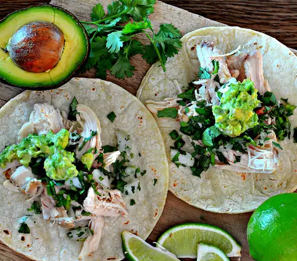

Street Tacos

These street tacos are easy to make, packed with flavor, and look great too! These little dynamites are tasty!
Ingredients
- 6 Corn Tortillas
- 3 Cups chopped chicken
- 4 sprigs fresh cilantro
- 1/2 Cup chopped white onion
- 1 cup guacmole
- 1 lime, cut into wedges
Steps
- Place a paper towel on a microwave-safe plate and top with tortillas; heat in the microwave for 10 seconds
- Place chicken in a microwave-safe bowl; heat in the microwave until heated through, 30 seconds to 1 minute
- Layer chicken, cilantro, onion, and guacamole, in that order, onto each tortilla. Squeeze lime juice over each taco